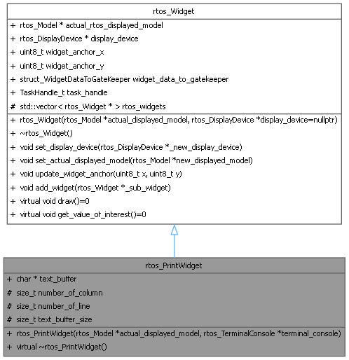
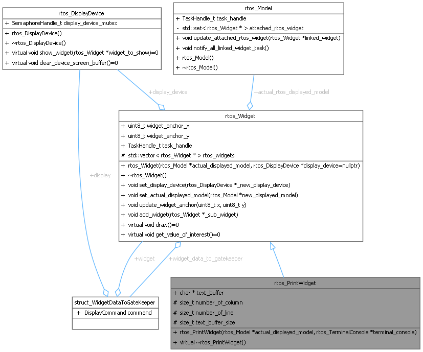

- Generated by
 1.16.1
1.16.1
RTOS wrapper for PrintWidget class. More...
#include <rtos_widget.h>


Public Member Functions | |
| rtos_PrintWidget (rtos_Model *actual_displayed_model, rtos_TerminalConsole *terminal_console) | |
| Public Member Functions inherited from rtos_Widget | |
| rtos_Widget (rtos_Model *actual_displayed_model, rtos_DisplayDevice *display_device=nullptr) | |
| constructor for RTOS widget | |
| ~rtos_Widget () | |
| destructor for RTOS widget | |
| void | set_display_device (rtos_DisplayDevice *_new_display_device) |
| Set the display screen object. | |
| void | set_actual_displayed_model (rtos_Model *new_displayed_model) |
| Set the actual displayed model object. | |
| void | update_widget_anchor (uint8_t x, uint8_t y) |
| Modify the anchor of the widget on the display screen. | |
| void | add_widget (rtos_Widget *_sub_widget) |
| add sub_widget to the current widget | |
| virtual void | draw ()=0 |
| a pure virtual member that is called to effectively draw the widget. | |
| virtual void | get_value_of_interest ()=0 |
| A pure virtual method that results in the transfer of the displayed values of the displayed model to the widget. | |
Public Attributes | |
| char * | text_buffer = nullptr |
| the effective character buffer | |
| Public Attributes inherited from rtos_Widget | |
| rtos_Model * | actual_rtos_displayed_model {nullptr} |
| a pointer to the Model actually displayed by the widget | |
| rtos_DisplayDevice * | display_device {nullptr} |
| the display device where the attached to the frame buffer | |
| uint8_t | widget_anchor_x |
| location in x of the widget within the hosting framebuffer | |
| uint8_t | widget_anchor_y |
| location in y of the widget within the hosting framebuffer | |
| struct_WidgetDataToGateKeeper | widget_data_to_gatekeeper |
| data structure used to queue widget data to send to the display task | |
| TaskHandle_t | task_handle |
| FreeRTOS task handle associated to the widget. | |
Protected Attributes | |
| size_t | number_of_column |
| the size, in number of character of a line | |
| size_t | number_of_line |
| the number of line | |
| size_t | text_buffer_size |
| the number of characters | |
| Protected Attributes inherited from rtos_Widget | |
| std::vector< rtos_Widget * > | rtos_widgets |
| A rtos_widget can be composed by several rtos_widgets. | |
RTOS wrapper for PrintWidget class.
| rtos_PrintWidget::rtos_PrintWidget | ( | rtos_Model * | actual_displayed_model, |
| rtos_TerminalConsole * | terminal_console ) |
| actual_displayed_model | the displayed model of the widget |
| terminal_console | the terminal console associated to the print widget |